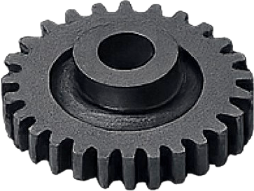

FDM-3D-printen
De meest verspreide 3D-printtechnologie: een gesmolten kunststofdraad, laag per laag aangebracht. Van een PLA-prototype tot een PEEK-onderdeel voor de luchtvaart.

FDM in 3 stappen
De draad smelt
Een spoel kunststof voedt een verwarmde nozzle die het materiaal doet smelten.
De nozzle tekent
De nozzle brengt het materiaal lijn per lijn aan, als een computergestuurde 3D-pen.
Laag na laag
Het onderdeel groeit laag per laag, van voordelig PLA tot hoogwaardig PEEK.
Uw onderdeel
Stuur uw bestand: we bevestigen dat FDM de juiste keuze is, of we verwijzen u naar een andere technologie.
Wanneer kiezen?
MontagehoekSleep om te draaien
- Snelle, voordelige prototypes
- Zeer ruime materiaalkeuze, van PLA tot PEEK en ULTEM
- Grote onderdelen (Modix Big Meter)
- Meerkleurige en multimateriaalonderdelen
- Zichtbare laaglijnen
- Minder sterkte tussen de lagen: de oriëntatie telt
- Supports nodig voor overhangende delen
Onze FDM-machines
Bambu Lab H2C
Multimateriaalprinten
Fiche bekijken →
Bambu Lab X1C
3D-printen voor series
Fiche bekijken →
Prusa Core One
Snelle industriële prototyping
Fiche bekijken →
Modix Big Meter
3D-printen op groot formaat
Fiche bekijken →
INTAMSYS Funmat HT
Industriële materialen
Fiche bekijken →Onze FDM-materialen

PLA
PLA, het standaardmateriaal
Fiche bekijken →
PETG
De grote broer van PLA
Fiche bekijken →
ABS
De klassieker voor technische onderdelen
Fiche bekijken →
ASA
Voor buitengebruik?
Fiche bekijken →
TPU
Flexibiliteit zonder kopzorgen
Fiche bekijken →
PP
Licht, flexibel en bestand tegen chemicaliën.
Fiche bekijken →
PA12-CF
Stijf licht technisch
Fiche bekijken →
PA12-GF
Stabiel robuust industrieel
Fiche bekijken →
PPS-CF
Extreme prestaties voor zware omgevingen.
Fiche bekijken →
PEEK
Maximale industriële prestaties
Fiche bekijken →
PEKK
Toegankelijke geavanceerde prestaties
Fiche bekijken →
ULTEM (PEI)
Extreem hoge temperatuur
Fiche bekijken →Vergelijken om beter te kiezen
FDM vs SLS vs SLA
FDM, SLS of SLA (hars): welke 3D-printtechnologie kiezen? Vergelijking van precisie, materialen, kosten en levertijd, door O&D Impression 3D in Luik.
Fiche openen →VergelijkingPLA vs PETG
PLA of PETG: welke kiezen? Volledige vergelijking van sterkte, temperatuur en kosten, door O&D Impression 3D, uw atelier in Welkenraedt (Luik).
Fiche openen →VergelijkingABS vs ASA
ABS of ASA voor uw technische onderdelen? Vergelijking van UV-, thermische en mechanische bestendigheid, door O&D Impression 3D, atelier in Welkenraedt (Luik).
Fiche openen →VergelijkingPA12-CF vs PA12-GF
Koolstofvezel of glasvezel voor uw nylon PA12? Vergelijking van stijfheid, gewicht en slagvastheid, door O&D Impression 3D in Luik.
Fiche openen →VergelijkingPPA-CF vs PPS-CF
PPA-CF of PPS-CF voor uw industriële onderdelen? Ontdek onze volledige technische vergelijking: thermische, chemische en mechanische bestendigheid in…
Fiche openen →VergelijkingPEEK vs PEKK vs Ultem
PEEK, PEKK of Ultem voor uw hoogwaardige onderdelen? Vergelijking van temperatuur, sterkte en kosten, door O&D Impression 3D in Luik.
Fiche openen →Gerealiseerde projecten

Polypropyleen onderdeel voor een logopedist
Revalidatiehulpmiddel op maat voor een logopedist, in polypropyleen nagemaakt via 3D-printen en aangepast aan de noden van de patiënten. Project van O&D…
Fiche openen →
Tandwiel van een vleesmolen in 3D nagemaakt
Gebroken tandwiel van een vleesmolen nagemaakt in PLA: reverse engineering in 1 u, onderdeel klaar in minder dan 48 u. Een project van O&D Impression 3D, Welkenraedt.
Fiche openen →
Audi S3-onderdelen nagemaakt in PAHT-CF
Namaak van beschadigde Audi S3-onderdelen in PAHT-CF en PLA: bumperrooster en S3-logokapjes. Een project van O&D Impression 3D, Luik.
Fiche openen →
Infrabel-maquette
3D-geprinte miniatuurrails in PLA voor de inhuldigingsmaquette van Infrabel. Een project van O&D Impression 3D, atelier in Welkenraedt (Luik).
Fiche openen →
Krukvoeten
Krukvoeten van 40 cm in zwart PLA, op maat geprint voor Airbnb-vakantiewoningen in Herve: 24 u per stuk, gratis prototype. Project van O&D…
Fiche openen →
Hekpunt nagemaakt in ASA
Gebroken decoratieve hekpunt, opnieuw getekend op basis van foto's en opnieuw geprint in UV-bestendig ASA op een Bambu Lab X1C. Project van O&D, Welkenraedt.
Fiche openen →Een onderdeel te maken?
Stuur uw 3D-bestand of beschrijf uw behoefte: directe offerte met bestand, offerte op maat binnen 24 u.